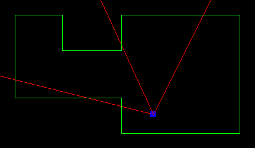
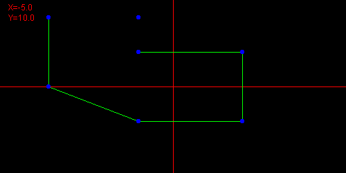

1D
1D is a small demo of a one dimensional graphical engine written in Java. The demo has three components. The first is a first person view of the world as seen in the gif above. Then there is a top down view, mostly for debugging purposes. Finally, there is a level editor to make levels.
Graphics Engine
While I like to call this a one dimensional graphics engine it is really a unique 2D graphical engine. Just like how a 3D engine rasters a 3D world to a 2D viewport, this engine rasters a 2D world to a 1D viewport. In fact, this engine follows the same steps as a 3D engine would except rendering line segments instead of triangles. First, at each frame it calculates a transformation matrix based on where the character is. Then each line is iterated through the rasterization routine. Finally, the frame buffer is drawn to the screen.
Transformation matrix
The transform matrix used. The first matrix rotates the world by -θ, the character's viewing angle. The second translate the world by (-tx, -ty), the location of the character.Line Rasterization Routine
- The endpoints of the line are transformed using the transformation matrix
- The line is verified to be in the viewing triangle (analogous to 3D's frustum)
- The endpoints are then projected onto the viewport line in pixel space
- Each pixel of the line is iterated through
- The depth is calculated
- If the depth is the smallest store it in a 1D z-buffer and continue, otherwise skip this pixel
- The color shade is determined by the depth and the line's angle
- Add the shaded pixel to the 1D frame buffer
Top Down View
The top down view shows the character's position and cone of vision along with the map. The blue square denotes the location of the character, the green lines indicate walls of the map, and the red lines show the character's cone of vision.
Level Editor
The level editor allows for an easier way to make levels. To make a line simply click the two endpoints. Holding shift will make a line either horizontal of vertical. By default the editor starts a new line every time, so to make connected lines hold control. Backspace will remove the last placed line, whereas delete will delete all lines. Finally, the enter key prints out the level data to console. This data can be saved to a file and then the graphics engine will render it.